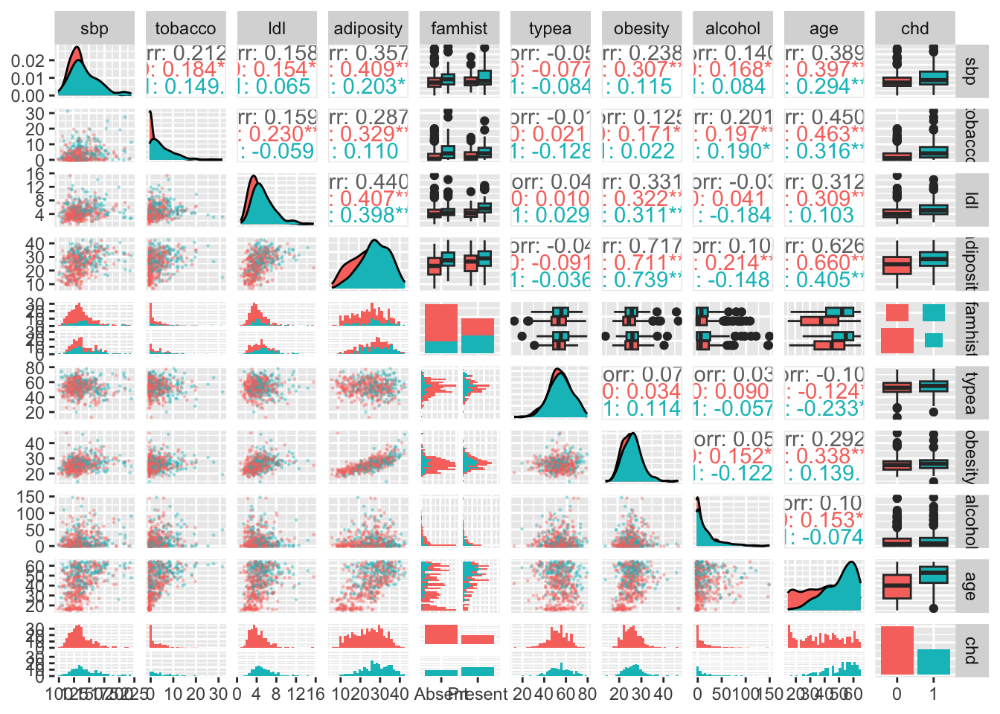

MA8701 Advanced methods in statistical inference and learning
L10: Shrinkage methods for the GLM
Before we begin
Literature
[ELS] The Elements of Statistical Learning: Data Mining, Inference, and Prediction, Second Edition (Springer Series in Statistics, 2009) by Trevor Hastie, Robert Tibshirani, and Jerome Friedman. Ebook. Chapter 4.4.1-4.4.3 (4.4.4 is covered in 3.2 of HTW).
[HTW] Hastie, Tibshirani, Wainwright: “Statistical Learning with Sparsity: The Lasso and Generalizations”. CRC press. Ebook. Chapter 3.2,3.7, 5.4.3
and for the interested student
- [WNvW] Wessel N. van Wieringen: Lecture notes on ridge regression Chapter 5.
Supplemental sources useful for week 6 (see also the section on “Preparing for inference for the lasso and ridge”)
- Bootstrap confidence intervals in the master thesis of Lene Tillerli Omdal Section 3.6.2 and teaching material from TMA4300 - see the wikipage for that course.
- Short note on multiple hypothesis testing in TMA4267 Linear Statistical Models, Kari K. Halle, Øyvind Bakke and Mette Langaas, March 15, 2017.
Generalized linear models
(HTW 3.1, 3.2, and TMA4315 GLM background)
The model
The GLM model has three ingredients:
- Random component
- Systematic component
- Link function
We look into that for the binomial distribution - to get multiple linear regression and logistic regression.
- Write in class
Explaining \(\beta\) in logistic regression
The ratio \(\frac{P(Y_i=1)}{P(Y_i=0)}=\frac{\pi_i}{1-\pi_1}\) is called the odds.
If \(\pi_i=\frac{1}{2}\) then the odds is \(1\), and if \(\pi_i=\frac{1}{4}\) then the odds is \(\frac{1}{3}\). We may make a table for probability vs. odds in R:
| pivec | 0.10 | 0.20 | 0.30 | 0.40 | 0.5 | 0.6 | 0.70 | 0.8 | 0.9 |
| odds | 0.11 | 0.25 | 0.43 | 0.67 | 1.0 | 1.5 | 2.33 | 4.0 | 9.0 |
- Odds may be seen to be a better scale than probability to represent chance, and is used in betting. In addition, odds are unbounded above.
We look at the link function (inverse of the response function). Let us assume that our linear predictor has \(k\) covariates present
\[\begin{align*} \eta_i&= \beta_0+\beta_1 x_{i1}+\beta_2 x_{i2}+\cdots + \beta_k x_{ik}\\ \pi_i&= \frac{\exp(\eta_i)}{1+\exp(\eta_i)}\\ \eta_i&=\ln(\frac{\pi_i}{1-\pi_i})\\ \ln(\frac{\pi_i}{1-\pi_i})&=\beta_0+\beta_1 x_{i1}+\beta_2 x_{i2}+\cdots + \beta_k x_{ik}\\ \frac{\pi_i}{1-\pi_i}=&\frac{P(Y_i=1)}{P(Y_i=0)}=\exp(\beta_0)\cdot \exp(\beta_1 x_{i1})\cdots\exp(\beta_k x_{ik}) \end{align*}\]
We have a multiplicative model for the odds.
So, what if we increase \(x_{1i}\) to \(x_{1i}+1\)?
If the covariate \(x_{1i}\) increases by one unit (while all other covariates are kept fixed) then the odds is multiplied by \(\exp(\beta_1)\):
\[\begin{align*} \frac{P(Y_i=1\mid x_{i1}+1)}{P(Y_i=0)\mid x_{i1}+1)}&=\exp(\beta_0)\cdot \exp(\beta_1 (x_{i1}+1))\cdots\exp(\beta_k x_{ik})\\ &=\exp(\beta_0)\cdot \exp(\beta_1 x_{i1})\exp(\beta_1)\cdots\exp(\beta_k x_{ik})\\ &=\frac{P(Y_i=1\mid x_{i1})}{P(Y_i=0\mid x_{i1})}\cdot \exp(\beta_1)\\ \end{align*}\]
This means that if \(x_{i1}\) increases by \(1\) then: if \(\beta_1<0\) we get a decrease in the odds, if \(\beta_1=0\) no change, and if \(\beta_1>0\) we have an increase. In the logit model \(\exp(\beta_1)\) is easier to interpret than \(\beta_1\).
The response function as a function of the covariate \(x\) and not of \(\eta\). Solid lines: \(\beta_0=0\) and \(\beta_1\) is \(0.8\) (blue), \(1\) (red) and \(2\) (orange), and dashed lines with \(\beta_0=1\).
Parameter estimation
First logistic regression, then ridge and lasso logistic regression - and (maybe) elastic net logistic regression.
Logistic regression
Maximum likelihood estimation = maximize the likelihood of the data. We write for the loglikelihood \({\cal{l}}(\beta_0,\beta; {\boldsymbol y}, {\boldsymbol X})\).
We write out the loglikelihood for the binomial with logit link =logistic regression.
Algorithms
To understand the ridge and lasso logistic regression we first look at the iteratively reweighted least squares (IRLS) - as a result of the Newton Raphson method for the logistic regression (unpenalized).
Properties
The parameter estimator is asymptotically normal. Unbiased with variance the inverse of the Fisher information matrix - as known TMA4315.
In class we now scroll down to the South African data set and look at the data and the logistic regression.
Penalized logistic regression
For penalized method we instead minimize the negative loglikelihood scaled with \(\frac{1}{N}\).
The ridge and lasso penalty is added to the scaled negative loglikelihood.
Write in class
Algorithms
- The likelihood for the GLM is differentiable, and the ridge and lasso objective functions are convex - and can be solved with socalled “standard convex optimization methods”.
- But, by popular demand also special algorithms are available - building on the cyclic coordinate descent.
Ridge logistic regression IRWLS
Lasso logistic regression fitting algoritm
(HTW page 116)
Code
OUTER LOOP: start with lambdamax and decrement
MIDDLE LOOP (with warm start)
compute quadratic approximation
for current beta-estimates
INNER LOOP: cyclic coordinate descent
to minimize quadratic approximation
added the lasso penaltyCriteria for choosing \(\lambda\)
We use cross-validation to choose \(\lambda\).
For regression we choose \(\lambda\) by minimizing the (mean) squared error.
For (ridge and) lasso logistic regression we may choose:
- misclassification error rate on the validation set
- ROC-AUC or PR-AUC
- binomial deviance
Evaluation metrics
Confusion matrix, sensitivity, specificity
(from TMA4268)
In a two class problem - assume the classes are labelled “-” (non disease,0) and “+” (disease,1). In a population setting we define the following event and associated number of observations.
| Predicted - | Predicted + | Total | |
|---|---|---|---|
| True - | True Negative TN | False Positive FP | N |
| True + | False Negative FN | True Positive TP | P |
| Total | N* | P* |
(N in this context not to be confused with our sample size…)
Sensitivity (recall) is the proportion of correctly classified positive observations: \(\frac{\# \text{True Positive}}{\# \text{Condition Positive}}=\frac{\text{TP}}{\text{P}}\).
Specificity is the proportion of correctly classified negative observations: \(\frac{\# \text{True Negative}}{\# \text{Condition Negative}}=\frac{\text{TN}}{\text{N}}\).
We would like that a classification rule have both a high sensitivity and a high specificity.
Other useful quantities:
| Name | Definition | Synonoms |
|---|---|---|
| False positive rate | FP/N | Type I error, 1-specificity |
| True positive rate | TP/P | 1-Type II error, power, sensitivity, recall |
| Positive predictive value (PPV) | TP/P* | Precision, 1-false discovery proportion |
| Negative predictive value (NPV) | TN/N* |
Where the PPV can be used together with the sensitivity to make a precision-recall curve more suitable for low case rates.
ROC curves
(also from TMA4268)
The receiver operating characteristics (ROC) curve gives a graphical display of the sensitivity against specificity, as the threshold value (cut-off on probability of success or disease) is moved over the range of all possible values. An ideal classifier will give a ROC curve which hugs the top left corner, while a straight line represents a classifier with a random guess of the outcome.
ROC-AUC
- The ROC-AUC score is the area under the ROC curve. It ranges between the values 0 and 1, where a higher value indicates a better classifier.
- The AUC score is useful for comparing the performance of different classifiers, as all possible threshold values are taken into account.
- The ROC-AUC is closely connected to the robust U statistics.
- If the prevalence (case proportion) is very low (0.01ish), the ROC-AUC may be misleading, and the PR-AUC is more commonly used.
ROC-PR
To be added.
Deviance
The deviance is based on the likelihood ratio test statistic.
The derivation assumes that data can be grouped into covariate patterns, with \(G\) groups (else interval solutions are used in practice).
Saturated model: If we were to provide a perfect fit to our data then we would estimate \(\pi_j\) by the observed frequency for the group, \(\hat{y}_j=y_j\).
Candidate model: the model with the current choice of \(\lambda\).
\[D_{\lambda}=2(l(\text{saturated model})-l(\text{candidate model}_{\lambda}))\] The null deviance is replacing the candidate model with a model where \(\hat{y}_i=\frac{1}{N}\sum_{i=1}^N y_i\) (the case proportion).
Example: South African heart disease
(ELS 4.4.2)
Group discussion
Comment on what is done and the results. Where are the CIs and \(p\)-values for the ridge and lasso version?
Data set
The data is presented in ELS Section 4.4.2, and downloaded from http://statweb.stanford.edu/~tibs/ElemStatLearn.1stEd/ with information in the file SAheat.info and data in SAheart.data.
- This is a retrospective sample of males in a heart-disease high-risk region in South Africa.
- It consists of 462 observations on the 10 variables. All subjects are male in the age range 15-64.
- There are 160 cases (individuals who have suffered from a conorary heart disease) and 302 controls (individuals who have not suffered from a conorary heart disease).
- The overall prevalence in the region was 5.1%.
The response value (chd) and covariates
chd: conorary heart disease {yes, no} coded by the numbers {1, 0}sbp: systolic blood pressure
tobacco: cumulative tobacco (kg)
ldl: low density lipoprotein cholesteroladiposity: a numeric vectorfamhist: family history of heart disease. Categorical variable with two levels: {Absent, Present}.typea: type-A behaviorobesity: a numerical valuealcohol: current alcohol consumptionage: age at onset
The goal is to identify important risk factors.
Data description
We start by loading and looking at the data:
Code
ds=read.csv("./SAheart.data",sep=",")[,-1]
ds$chd=as.factor(ds$chd)
ds$famhist=as.factor(ds$famhist)
dim(ds)[1] 462 10Code
colnames(ds) [1] "sbp" "tobacco" "ldl" "adiposity" "famhist" "typea"
[7] "obesity" "alcohol" "age" "chd" Code
head(ds) sbp tobacco ldl adiposity famhist typea obesity alcohol age chd
1 160 12.00 5.73 23.11 Present 49 25.30 97.20 52 1
2 144 0.01 4.41 28.61 Absent 55 28.87 2.06 63 1
3 118 0.08 3.48 32.28 Present 52 29.14 3.81 46 0
4 170 7.50 6.41 38.03 Present 51 31.99 24.26 58 1
5 134 13.60 3.50 27.78 Present 60 25.99 57.34 49 1
6 132 6.20 6.47 36.21 Present 62 30.77 14.14 45 0Code
# to be easier to compare with lasso and ridge, we standardize the xs
xs=model.matrix(chd~.,data=ds)[,-1] # to take care of categorical variables, but not include the intercept column
xss=scale(xs)
ys=as.numeric(ds[,10])-1 # not factor, must be numeric else errors...
head(xss) sbp tobacco ldl adiposity famhistPresent typea
1 1.0574173 1.8210988 0.4778941 -0.2951832 1.1845700 -0.4180170
2 0.2767892 -0.7893817 -0.1595071 0.4116942 -0.8423609 0.1931344
3 -0.9917313 -0.7741412 -0.6085852 0.8833742 1.1845700 -0.1124413
4 1.5453098 0.8413521 0.8062523 1.6223824 1.1845700 -0.2142999
5 -0.2111033 2.1694532 -0.5989276 0.3050200 1.1845700 0.7024273
6 -0.3086818 0.5583142 0.8352251 1.3884702 1.1845700 0.9061444
obesity alcohol age
1 -0.17659445 3.2741887 0.6286543
2 0.67064592 -0.6120811 1.3816170
3 0.73472292 -0.5405973 0.2179473
4 1.41109128 0.2947424 1.0393612
5 -0.01284211 1.6459912 0.4233008
6 1.12155816 -0.1186384 0.1494961Code
table(ys)ys
0 1
302 160 Code
dss=data.frame(ys,xss)
colnames(dss)[1]="chd"
apply(dss,2,sd) chd sbp tobacco ldl adiposity
0.4763125 1.0000000 1.0000000 1.0000000 1.0000000
famhistPresent typea obesity alcohol age
1.0000000 1.0000000 1.0000000 1.0000000 1.0000000 Code
apply(dss,2,mean) chd sbp tobacco ldl adiposity
3.463203e-01 1.289252e-16 5.166622e-16 -3.961057e-15 1.557677e-15
famhistPresent typea obesity alcohol age
-3.892990e-17 -9.924721e-17 -5.292544e-15 -6.411418e-16 -3.953067e-17 The coloring is done according to the response variable, where green represents a case \(Y=1\) and red represents a control \(Y=0\).

Q: Comment on the correlation between covariates, and what that may lead to?
Logistic regression
We now fit a (multiple) logistic regression model using the glm function and the full data set. In order to fit a logistic model, the family argument must be set equal to ="binomial". The summary function prints out the estimates of the coefficients, their standard errors and z-values. As for a linear regression model, the significant coefficients are indicated by stars where the significant codes are included in the R printout.
Code
glm_heart = glm(chd~.,data=dss, family="binomial")
summary(glm_heart)
Call:
glm(formula = chd ~ ., family = "binomial", data = dss)
Deviance Residuals:
Min 1Q Median 3Q Max
-1.7781 -0.8213 -0.4387 0.8889 2.5435
Coefficients:
Estimate Std. Error z value Pr(>|z|)
(Intercept) -0.878545 0.123218 -7.130 1.0e-12 ***
sbp 0.133308 0.117452 1.135 0.256374
tobacco 0.364578 0.122187 2.984 0.002847 **
ldl 0.360181 0.123554 2.915 0.003555 **
adiposity 0.144616 0.227892 0.635 0.525700
famhistPresent 0.456538 0.112433 4.061 4.9e-05 ***
typea 0.388726 0.120954 3.214 0.001310 **
obesity -0.265082 0.186446 -1.422 0.155095
alcohol 0.002978 0.109754 0.027 0.978350
age 0.660695 0.177203 3.728 0.000193 ***
---
Signif. codes: 0 '***' 0.001 '**' 0.01 '*' 0.05 '.' 0.1 ' ' 1
(Dispersion parameter for binomial family taken to be 1)
Null deviance: 596.11 on 461 degrees of freedom
Residual deviance: 472.14 on 452 degrees of freedom
AIC: 492.14
Number of Fisher Scoring iterations: 5Code
exp(coef(glm_heart)) (Intercept) sbp tobacco ldl adiposity
0.4153868 1.1426023 1.4399061 1.4335883 1.1555963
famhistPresent typea obesity alcohol age
1.5785989 1.4750996 0.7671430 1.0029829 1.9361378 A very surprising result here is that sbp and obesity are NOT significant and obesity has negative sign. This is a result of the correlation between covariates. In separate models with only sbp or only obesity each is positive and significant.
Q: How would you interpret the estimated coefficient for tobacco?
Ridge logistic regression
Code
ridgefit=glmnet(x=xss,y=ys,alpha=0,standardize=FALSE,family="binomial") # already standardized
plot(ridgefit,xvar="lambda",label=TRUE)[1] "The lamda giving the smallest CV error 0.0177267348467831"[1] "The 1sd err method lambda 0.218543472568106"10 x 2 sparse Matrix of class "dgCMatrix"
s1
(Intercept) -0.71220689 -0.878545196
sbp 0.10221203 0.133308398
tobacco 0.21846208 0.364577926
ldl 0.18656817 0.360180594
adiposity 0.11163533 0.144616485
famhistPresent 0.23181050 0.456537713
typea 0.13189202 0.388725509
obesity -0.03579032 -0.265082072
alcohol 0.01941844 0.002978424
age 0.28192570 0.660695163Lasso logistic regression
Numbering in plots is order of covariates, so:
Code
cbind(1:9,colnames(xss)) [,1] [,2]
[1,] "1" "sbp"
[2,] "2" "tobacco"
[3,] "3" "ldl"
[4,] "4" "adiposity"
[5,] "5" "famhistPresent"
[6,] "6" "typea"
[7,] "7" "obesity"
[8,] "8" "alcohol"
[9,] "9" "age" Code
lassofit=glmnet(x=xss,y=ys,alpha=1,standardize=FALSE,family="binomial") # already standardized[1] "The lamda giving the smallest CV error 0.00903024338615681"[1] "The 1sd err method lambda 0.052890323504839"10 x 3 sparse Matrix of class "dgCMatrix"
lasso ridge logistic
(Intercept) -0.70977228 -0.71220689 -0.878545196
sbp . 0.10221203 0.133308398
tobacco 0.18103811 0.21846208 0.364577926
ldl 0.14726886 0.18656817 0.360180594
adiposity . 0.11163533 0.144616485
famhistPresent 0.22246385 0.23181050 0.456537713
typea 0.01954765 0.13189202 0.388725509
obesity . -0.03579032 -0.265082072
alcohol . 0.01941844 0.002978424
age 0.43990121 0.28192570 0.660695163Elastic net logistic regression
Code
cbind(1:9,colnames(xss)) [,1] [,2]
[1,] "1" "sbp"
[2,] "2" "tobacco"
[3,] "3" "ldl"
[4,] "4" "adiposity"
[5,] "5" "famhistPresent"
[6,] "6" "typea"
[7,] "7" "obesity"
[8,] "8" "alcohol"
[9,] "9" "age" Code
elfit=glmnet(x=xss,y=ys,alpha=0.5,standardize=FALSE,family="binomial") # already standardized[1] "The lamda giving the smallest CV error 0.00822802145212431"[1] "The 1sd err method lambda 0.0302657876716661"10 x 4 sparse Matrix of class "dgCMatrix"
elactic lasso ridge logistic
(Intercept) -0.787051709 -0.70977228 -0.71220689 -0.878545196
sbp 0.068908933 . 0.10221203 0.133308398
tobacco 0.296131971 0.18103811 0.21846208 0.364577926
ldl 0.259807431 0.14726886 0.18656817 0.360180594
adiposity . . 0.11163533 0.144616485
famhistPresent 0.351410691 0.22246385 0.23181050 0.456537713
typea 0.217807228 0.01954765 0.13189202 0.388725509
obesity -0.003273359 . -0.03579032 -0.265082072
alcohol . . 0.01941844 0.002978424
age 0.544428773 0.43990121 0.28192570 0.660695163Computational details for the glmnet
(HTW 3.7)
glmnet is the implementation in R of the elastic net from HTW-book, and the package is maintained by Trevor Hastie.
The package fits generalized linear models using penalized maximum likelihood of elastic net type (lasso and ridge are special cases).
The logistic lasso is fitted using a quadratic approximation for the negative log-likelihood in a “proximal-Newton iterative approach”.
Software links
For Python there are different options.
- Python glmnet is recommended by Hastie et al.
- scikit-learn (seems to mostly be for regression? is there lasso for classification here?)
glmnet inputs
Code
glmnet(x, y,
family = c("gaussian", "binomial", "poisson", "multinomial","cox", "mgaussian"),
weights = NULL, offset = NULL, alpha = 1, nlambda = 100,
lambda.min.ratio = ifelse(nobs < nvars, 0.01, 1e-04),
lambda = NULL, standardize = TRUE, intercept = TRUE,
thresh = 1e-07, dfmax = nvars + 1,
pmax = min(dfmax * 2 + 20, nvars),
exclude = NULL, penalty.factor = rep(1, nvars),
lower.limits = -Inf, upper.limits = Inf, maxit = 1e+05,
type.gaussian = ifelse(nvars < 500, "covariance", "naive"),
type.logistic = c("Newton", "modified.Newton"),
standardize.response = FALSE,
type.multinomial = c("ungrouped","grouped"),
relax = FALSE, trace.it = 0, ...)cv.glmnet inputs
Code
cv.glmnet(x, y, weights = NULL, offset = NULL, lambda = NULL,
type.measure = c("default", "mse", "deviance", "class", "auc", "mae","C"),
nfolds = 10, foldid = NULL,
alignment = c("lambda", "fraction"), grouped = TRUE,
keep = FALSE, parallel = FALSE,
gamma = c(0, 0.25, 0.5, 0.75, 1), relax = FALSE, trace.it = 0, ...)type.measure defaults to deviance (accoring to help(cv.glmnet)). The last is for Cox models.
Family
we have only covered gaussian (the default) and binomial.
Each family has implemented the deviance measure. Poisson regression and Cox proportional hazard (survival analysis) is also implemented in glmnet.
Penalties
The elastic net is implemented, with three possible adjustment parameters.
\[ \text{minimize}_{\beta_0,\beta} \{ -\frac{1}{N} l(y;\beta_0,\beta)+\lambda \sum_{j=1}^p \gamma_j ((1-\alpha)\beta_j^2+\alpha \lvert \beta_j \rvert)\}\]
- \(\lambda\): the penalty, default a grid of 100 values is chosen, to cover the lasso path on the log scale.
- \(\alpha\): elastic net parameter \(\in [0,1]\). This is usually manually selected by a grid search over 3-5 values. Default is \(\alpha=1\) (lasso), and with \(\alpha=0\) we get ridge.
- \(\gamma_j\): penalty modifier for each covariate to be able to always include (\(\gamma_j==0\)), or exclude (\(\gamma_j=\text{Inf}\)), or give individual penalty modifications. Default \(\lambda_j=1\).
For the \(\lambda\) penalty the maximal value is for
- linear regression: \(\lambda_{\text max}=\text{max}_j \lvert \hat{\beta}_{LS,j} \rvert\) (standardized coefficients) or, should there also be a factor 1/N?
- logistic regression: \(\lambda_{\text max}=\text{max}_{j}\lvert {\boldsymbol x}_j ^T ({\boldsymbol y}-\bar{p}) \rvert\) where \(\bar p\) is the mean case rate.
Additional modifications
- Coefficient bounds can be set (possible since coordinate descent is used)
- Some coefficients can be excluded from the penalization (than thus forced in).
- Offset can be added (popular if rate models for Poisson is used)
- For binary and multinomial data factors or matrices can be input.
- Sparse matrices with covariates can be supplied.
Lasso variants
Elastic net is already in glmnet (alpha-parameter).
Other lasso variants have their own R packages:
The group lasso https://cran.r-project.org/web/packages/grplasso/grplasso.pdf
The fused lasso https://cran.r-project.org/web/packages/genlasso/genlasso.pdf
The sparse group lasso https://arxiv.org/pdf/2208.02942 and https://cran.r-project.org/web/packages/sparsegl/vignettes/sparsegl.html
Bayesian lasso blasso function for normal data in package monomvn https://rdrr.io/cran/monomvn/man/monomvn-package.html
Elastic net for ordinal data: https://cran.r-project.org/web/packages/ordinalNet/ordinalNet.pdf
Preparing for inference for the lasso and ridge
Confidence interval
Set-up
- We have a random sample \(Y_1,Y_2,\ldots,Y_N\) from
- some distribution \(F\) with some (unkonwn) parameter \(\theta\).
- Let \(y_1,y_2,\ldots,y_N\) be the observed values for the random sample.
Statistics
- We have two statistics \(\hat{\theta}_L(Y_1,Y_2,\ldots,Y_N)\) and \(\hat{\theta}_U(Y_1,Y_2,\ldots,Y_N)\) so that
\[P(\hat{\theta}_L(Y_1,Y_2,\ldots,Y_N)\le \theta \le \hat{\theta}_U(Y_1,Y_2,\ldots,Y_N))=1-\alpha\] where \(\alpha\in [0,1]\)
Confidence interval
The numerical interval \[[\hat{\theta}_L(y_1,y_2,\ldots,y_N),\hat{\theta}_U(y_1,y_2,\ldots,y_N)]\] is called a \((1-\alpha)\) 100% confidence interval.
Bootstrap confidence intervals
Percentile interval
Bias corrected accelerated interval
Single hypothesis test
\[H_{0}\colon \beta_j=0 \hspace{0.5cm} \text{vs.} \hspace{0.5cm} H_{1}\colon \beta_j \neq 0\]
| Not reject \(H_0\) | Reject \(H_0\) | |
|---|---|---|
| \(H_0\) true | Correct | Type I error |
| \(H_0\) false | Type II error | Correct |
- Two types of errors are possible, type I error and type II error.
- A type I error would be to reject \(H_0\) when \(H_0\) is true, that is concluding that there is a linear association between the response and the predictor where there is no such association. This is called a false positive finding.
- A type II error would be to fail to reject \(H_0\) when the alternative hypothesis \(H_1\) is true, that is not detecting that there is a linear association between the response and the covariate. This is called a false negative finding.
\(p\)-value
- A \(p\)-value \(p(X)\) is a test statistic satisfying \(0 \leq p({\boldsymbol Y}) \leq 1\) for every vector of observations \(\boldsymbol{Y}\).
- Small values give evidence that \(H_1\) is true.
- In single hypothesis testing, if the \(p\)-value is less than the chosen significance level (chosen upper limit for the probability of committing a type I error), then we reject the null hypothesis, \(H_0\).
- The chosen significance level is often referred to as \(\alpha\).
A \(p\)-value is valid if \[ P(p(\boldsymbol{Y}) \leq \alpha) \leq \alpha \] for all \(\alpha\), \(0 \leq \alpha \leq 1\), whenever \(H_0\) is true, that is, if the \(p\)-value is valid, rejection on the basis of the \(p\)-value ensures that the probability of type I error does not exceed \(\alpha\).
An exact \(p\)-value satisfies \[P(p(\boldsymbol{Y}) \leq \alpha) = \alpha\] for all \(\alpha\), \(0 \leq \alpha \leq 1\).
- The exact \(p\)-value is uniformly distributed when the null hypothesis is true.
- This is a fact that is often misunderstood by users of \(p\)-values.
- The incorrect urban myth is that \(p\)-values from true null hypotheses are close to one, when the correct fact is that all values in intervals of the same length are equally probable (which is a property of the uniform distribution).
From single to multiple hypotheses
In many situations we are not interested in testing only one hypothesis, but instead \(m\) hypotheses.
| Not reject \(H_0\) | Reject \(H_0\) | Total | |
|---|---|---|---|
| \(H_0\) true | \(U\) | \(V\) | \(m_0\) |
| \(H_0\) false | \(T\) | \(S\) | \(m - m_0\) |
| Total | \(m-R\) | \(R\) | \(m\) |
- Out of the \(m\) hypotheses tested, the (unknown) number of true null hypotheses is \(m_0\).
- \(V\): the number of type I errors (false positive findings) and
- \(T\): the number of type II errors (false negative findings).
- \(U\): the number of true null hypotheses that are not rejected and
- \(S\): the number of false null hypotheses that are rejected.
- \(R\): the number of hypoteses rejected for a specific cut-off
Observe: only \(m\) and \(R\) is observed!
Familywise error rate
The familywise error rate (FWER) is defined as the probability of one or more false positive findings
\[ \text{FWER} = P(V > 0) \] The number of false positive findings \(V\) is not known in a real life situation, but still we may find a cut-off on the \(p\)-value, called \(\alpha_{\text loc}\), that gives an upper limit to (controls) the FWER.
- Raw \(p\)-value, \(p_j\), the lowest nominal level to reject the null hypothesis.
- Adjusted \(p\)-value, \(\tilde{p}_j\), is the nominal level of the multiple (simultaneous) test procedure at which \(H_{0j}, j=1,\ldots,m\) is just rejected, given the values of all test statistics involved.
The adjusted \(p\)-values can be defined as \[\tilde{p}_j = \text{inf}\{\alpha \mid H_{0j}\text{ is rejected at FWER level } \alpha \}\]
In a multiple testing problem where all adjusted \(p\)-value below \(\alpha\) are rejected, the overall type I error rate (for example FWER) will be controlled at level \(\alpha\).
The Bonferroni method controls the FWER
Single-step methods controls for multiple testing by estimating one local significance level, \(\alpha_{\text{loc}}\), which is used as a cut-off to detect significance for each individual test.
The Bonferroni method is valid for all types of dependence structures between the test statistics.
The local significance level is \[\alpha_{\text loc}=\frac{\alpha}{m}\]
The adjusted \(p\)-value is \[ \tilde{p}_j =\min(1,m p_j)\]
Exercises
This week the best way to spend the time is to work on the Data Analysis Project 1.
But, also good to study the R-code for the South African heart disease example, and make some changes.
Smart: save this file as an .Rmd file and then run purl(file.Rmd) to produce a file with only the R-commands. (At the html-version you choose Code-Download Rmd on the top of the file).
- Change the CV criterion to auc and to class. Are there changes to what is the best choice for \(\lambda\)?